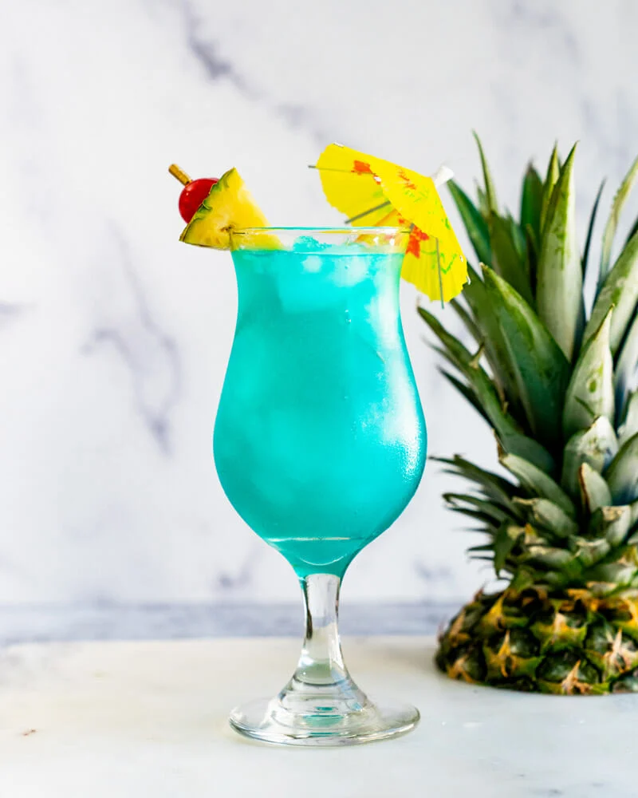
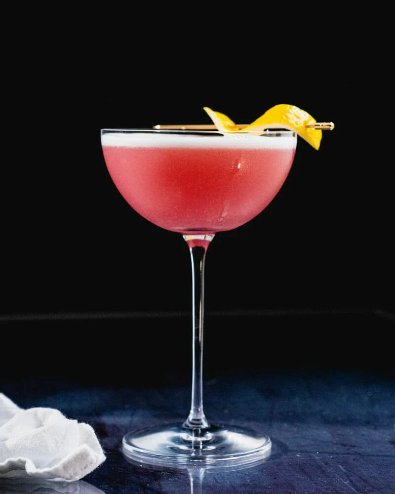
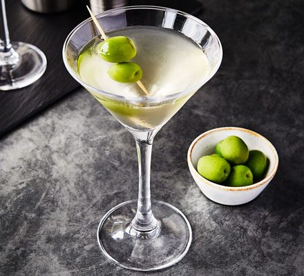
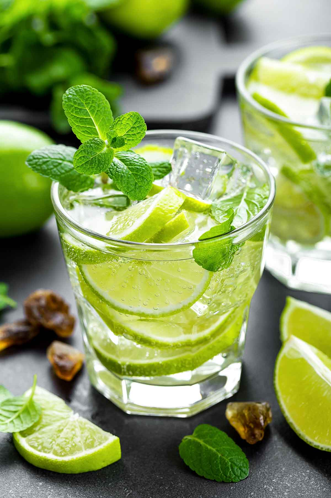

| Drinks | Description |
|---|---|
|  |
The Blue Lagoon Cocktail Tall, refreshing and bluer than the bluest Caribbean sky, the cocktail turns vodka, blue curaçao and lemonade into a drink you will want to dive into. Price: $ 8 |
|  |
Cosmopolitan Cocktail With a brilliant pink color and tangy, it has a refreshing flavor. This great cocktail is ready to spice up your next gathering, be it a dinner party or drinks on the patio with friends. It was at its height in the 1990’s (hello, Sex and the City) and sometimes makes purists roll their eyes. BUT! The Cosmo is a legit sour cocktail that’s worth drinking: the beautiful color is reason in itself. Price: $ 12 |
|  |
Martini Cocktail Whether it's the limited editions that celebrate our history or the time-honoured classics loved by bartenders the world over, every bottle of MARTINI starts with the wines, carefully selected from only the best harvests. Price: $ 13 |
|  |
Mojito Cocktail The Mojito is one of the most popular rum cocktails served today, with a recipe known around the world. The origins of this classic drink can be traced to Cuba and the 16th-century cocktail El Draque. Named for Sir Francis Drake, the English sea captain and explorer who visited Havana in 1586, El Draque was composed of aguardiente (a cane-spirit precursor to rum), lime, mint and sugar. It was supposedly consumed for medicinal purposes, but it’s easy to believe that drinkers enjoyed its flavor and effects. Price: $ 10 |